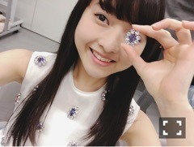
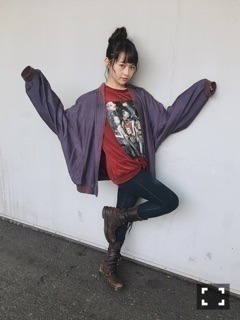
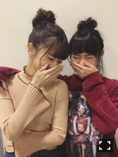
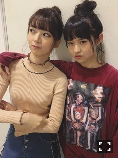

| 2016/11 06 Sun | 記念。748回目 |

ビジューが豪華な衣装です。
ミュージックステーション、
シブヤノオトで着用。
発売中のMdN、
お相手は映画監督の山戸結希さん。
乃木坂46もMVでお世話になりました！
山戸監督の作品は、
時に文学で時に哲学で浪漫的。
見逃しちゃいけない心が動く瞬間と
恥ずかしい、でも浸ってしまいたい
と思うような言葉の世界観があり、
とってもえぐられる。
女の子の心を掴むものばかりです！
撮影エピソードや過去の作品、
公開中の映画『溺れるナイフ』について
映像制作に対するそれぞれの目線で
いろんなお話をしたよ〜〜
深いところまで行き過ぎて
全部載ってないけどもね。
バチバチと心に響いてました。
お忙しい中ありがとうございました！
服装かわいすぎた、、
今月号はCDジャケット90年代狂騒史。
すごく面白いです！
次号の連載取材でも盛り上がりました。
坂道シリーズCDジャケットの
解説もありです。
これは買うしかない(°▽°)
"MARIKA MEETS CREATORS"
もう18回目です。
今日の握手会で18回記念の
お祝いのお花を贈ってくれたファンの方が
いらっしゃいました。
なので、改めて
この連載についてお話しします。
...............
前号の絶対フォント感を身に付ける。
こちらの2015年号で
私の連載がスタートしました。
内容は、気になるクリエイターを
訪ねて対談するという企画です。
1年半、18回目ということは
18人の方に会ってるのです。
そう考えるとすごい事だ！
取材する度、知らなかった世界が
パーっと広がっていって、
そこで受ける刺激と感動に
何度も何度もあちこちに
気持ちを動かされています。
私から見た視点で話を聞こうとしますが、
それだけでは浅いことも多くて。
違った観点から話を進めてくださる
編集部の皆さんに何度も助けられています。
最近の取材へ向けて準備する時も
自分の甘さにすごい反省しました。。
この連載は、ひとつの勉強の場で、
あとは、いつも私服だから
衣装として成り立つかどうか
着回す力が試される場 笑
ただ、好きでやっているだけでは
なかなか辿り着かないところ。
情報とデザイン。
細かいこと全然わからないけど、
その目がちょっとでも身に付いたかな。
それは、今まで訪ねた
クリエイターの皆さんや、
お世話になっている編集部の皆さんに
教わったことです！
1年半続けられていることへ感謝。
至らない部分はまだまだありますが、
伊藤万理華の目で
感じること思うことぶつけて、
その人の魅力がしっかり伝えられるよう、
頑張ろう。
...............

握手会ありがとうございました！
今朝ホテルから見た景色
名古屋城と朝日綺麗だったな〜
今日は味噌カツ食べられたから幸せ〜
名古屋飯だいすき！



3 2 5
奈々未と髪型同じだったん∠( 'ω')／
知らない人いるかもしれないけど∠( 'ω')／
実は誕生日も同じなんですよ∠( 'ω')／
まりか
コメント(596)
2016/11/06 23:59